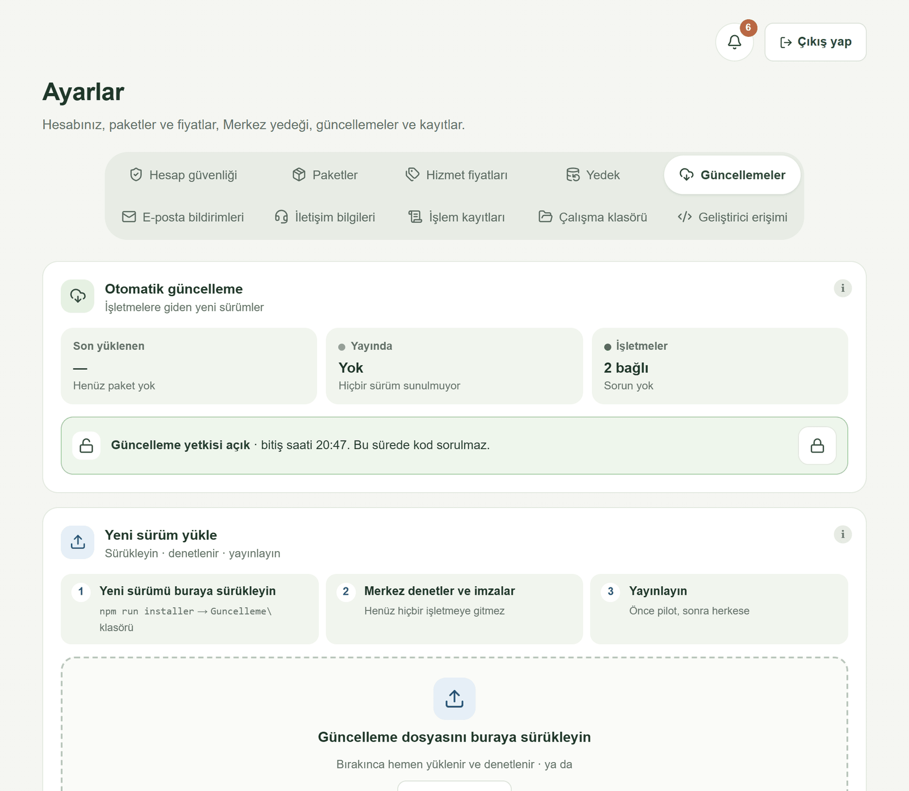

1Mola nedir?
Mola, kafe, restoran, pastane ve çay bahçeleri için yazdığım bir adisyon (masa ve sipariş takibi) ve QR menü sistemidir. Misafir masadaki QR kodu okutur, menüyü görür, sipariş verir, garson çağırır, hesap ister. Personel aynı sistemi tablet, telefon ya da kasa bilgisayarından kullanır.
Tasarım hedefleri
- İnternet kesilince iş durmamalı: sistem bulutta değil, işletmenin kasa bilgisayarında çalışır; tabletler ona Wi-Fi ile bağlanır.
- Veri işletmede kalmalı: satış, misafir ve çalışan bilgisi yalnız orada, şifreli durur (güvenlik ve KVKK).
- Yine de uzaktan hizmet verilebilmeli: lisans, destek, güncelleme, sahibin telefonundan ya da laptopundan raporlar ve mobil veriyle menü için satıcının sunucusu (Mola Merkez) var; satış verisini görmeyecek şekilde tasarlandı.
- Ucuz bir bilgisayarda 5 yıl hızlı çalışmalı: 5 yıllık yük testiyle ölçüldü (bölüm 12).
Rakamlarla proje (sürüm 0.1.18)
| Alan | Klasör | Dosya | Satır |
|---|---|---|---|
| Kafe sunucusu | server/ (Merkez hariç) | 113 | 19.135 |
| Mola Merkez sunucusu | server/merkez/ | 37 | 8.050 |
| Ortak iş kuralları | packages/domain/ | 73 | 7.759 |
| Ekranlar (React, TypeScript) · stiller (CSS) | src/ | 251 · 83 | 21.626 · 7.244 |
| Testler | tests/ | 323 | 44.609 |
| Betikler, kurulum programı (C#) | scripts/ | 73 | 12.118 |
| Android kabuğu (Java) | mobile/android/ | 6 | 1.943 |
Boş satırlar dahil; node_modules hariç. Test sayıları npm test ve playwright test --list çıktısından.
| Kullanıcı | Cihaz | Yaptıkları |
|---|---|---|
| Misafir | Kendi telefonu (tarayıcı) | Menü, sipariş, garson çağırma, hesap isteme. Hesap açmaz. |
| Garson · mutfak | Telefon (Android uygulaması) · tablet ya da fiş yazıcısı | Sipariş alır, QR siparişini onaylar, servis eder · "Hazırlanıyor", "Hazır". |
| Kasiyer | Kasa bilgisayarı ya da tablet | Ödeme, sınırlı iade, kör kasa sayımı. |
| Müdür ve sahip | Kasa bilgisayarı, tablet, telefon | Menü, raporlar, stok, rezervasyon, ayarlar; sahip ayrıca uzaktan rapor ve yönetim. |
| Satıcı ve yetkilileri | Mola Yönetim (tarayıcı) | Lisans, paket, destek, güncelleme yayını, duyurular, yedekler. |
2Mimari
İki sunucu ve onlara bağlanan tarayıcılar. İki sunucu da aynı depodan, TypeScript ile yazıldı; giriş noktaları server/index.ts ve server/merkez/index.ts.
| Parça | Görevi | Kod |
|---|---|---|
| Kafe sunucusu | İş kuralları, veri, yazdırma, yedek; tabletlere ekranları ve API'yi sunar. | server/app.ts |
| Ekranlar | Tek sayfalı React uygulaması; 360 px telefondan 1280 px kasaya kadar düzen değiştirir. | src/ |
| Misafir sayfası | Yalnız misafir menüsünü içeren ayrı, küçük paket. | src/guest-main.tsx |
| Mola Merkez | Lisans, kalp atışı, destek, güncelleme, tünel, köprü, şifreli yedek, "İşletmem var", site formu. | server/merkez/ |
| Mola Yönetim | Satıcının paneli (React); Merkez'den sunulur. | src/Platform*.tsx |
| Masaüstü ve Android | Windows kurulum, başlatma, kaldırma (C#); Android'de tam ekran WebView, ağda kafe arama, QR okuma (Java). | scripts/desktop/, mobile/android/ |
3Diller, kütüphaneler ve araçlar
Kural: olabildiğince az bağımlılık. Üretimde yalnız yedi npm paketi var (Express, React, React DOM, lucide-react, qrcode, sharp, zod). Veritabanı, WebSocket, SMTP, Excel üretimi ve QR çözme Node.js'in kendi modülleriyle, kütüphanesiz yazıldı.
| Dil / araç | Ne için |
|---|---|
| Diller | |
| TypeScript 7 | Bütün sunucu, ekran ve iş kuralı kodu. |
| HTML, CSS | Üç sayfa girişi (personel, misafir ve İşletmemi yönet; Mola Yönetim; internetten menü) ve web sitesi. Çatı yok; 83 elle yazılmış stil dosyası, yazdırma stilleri. Bu belge de HTML'den basıldı. |
| SQL (SQLite) | Tablolar, dizinler, değiştirilemez kayıt için tetikleyiciler, yıl paketlerinde ATTACH + INSERT…SELECT. |
| C# (.NET Framework 4) | Windows kurulum programı, Mola.exe, kaldırıcı; Windows'un kendi csc.exe'siyle derlenir, ek kurulum gerekmez. |
| Java | Android kabuğu: WebView, ağda kafe arama, kütüphanesiz QR çözücü (Reed-Solomon dahil). |
| PowerShell, Batch, sh | Windows anahtar kilidi (DPAPI), USB yazıcı; başlatma dosyaları; Mac, Linux ve VDS betikleri. |
| Çalışma ortamı ve kütüphaneler | |
| Node.js 24, Express 5 | İki sunucu. Kurulum paketi kendi node.exe'sini taşır. |
| node:sqlite | Yerleşik SQLite; ayrı veritabanı sunucusu yok, tek dosya. |
| node:crypto, WebCrypto | AES-256-GCM, Ed25519, X25519, HKDF, HMAC, scrypt, SHA-256; tarayıcıda aynı kod WebCrypto ile. |
| React 19, zod 4, sharp, qrcode | Ekranlar; kafe ile Merkez arasındaki mesajların katı şeması; fotoğraf küçültme ve konum bilgisini silme; masa QR'ları. |
| Derleme, test, yayın | |
| Vite 8, esbuild | Ekranları derler; sunucuyu kurulum paketi için tek dosyaya paketler. |
| tsx + node:test, Playwright 1.63 | Birim testleri; gerçek Chrome'da tarayıcı testleri ve bu belgenin PDF'e basılması. |
| Android SDK araçları | Gradle olmadan aapt2, javac, d8, apksigner; APK yaklaşık 100 kB. |
| Ubuntu 24.04, systemd, Caddy | VDS; Merkez servisi kum havuzunda; Caddy dört adın HTTPS sertifikasını alır ve istekleri Merkez'e iletir. |
4Temel ilkeler ve sipariş akışı
- Katmanlar: ekranlar (
src/), sunucu (server/) ve ikisinin de kullandığı saf iş kuralları (packages/domain/: fiyat, kampanya, sipariş durumu, kasa, KDV, iş günü).packages/domainhiçbir Node modülü içe aktarmaz; bir test ekranların sunucu modülü almadığını denetler. - Sunucu ekrana güvenmez: misafirin sepetindeki fiyat sunucuda yeniden hesaplanır; fark varsa
PRICE_CHANGEDdöner. Her işlem rol listesiyle denetlenir, izinsiz istek 403 alır. - Tekrara dayanıklı yazma: her yazma isteği bir
requestIdtaşır; ağ koptu diye iki kez gelen istek ikinci kez işlenmez, çift sipariş ya da ödeme olmaz. - Ekranlar sorarak güncellenir: 2 saniyede bir; sunucu ETag'i karşılaştırır, değişiklik yoksa gövdesiz 204 döner. Durum rol başına kırpılır (mutfak yalnız kendi işini alır).
- İş günü 05:00'te döner: gece 01:30'da kapanan hesap bu gecenin satışıdır. Kasa günü, raporlar, stok, rezervasyon ve oturum sonu tek sabitten türer (
DAY_START_HOUR = 5,packages/domain/business-day.ts).
Bir QR siparişi
- Misafir QR'ı okutur; masa kodu (144 bit rastgele) ile oturum açılır, tarayıcıya
mola_browserçerezi yazılır. - Sipariş
requestIdile gelir; sunucu fiyatı yeniden hesaplar. Misafir değiştirme süresi dolana kadar siparişi değiştirebilir; fiş yazıcısı süre dolunca basar. - Garson onaylar; mutfak ekranında "Yeni" olur ya da mutfak fişi basılır. Yazıcı hatası (kâğıt bitti, ulaşılamıyor) ESC/POS durum sorgusuyla ayırt edilip kasada gösterilir.
- Mutfak "Hazırlanıyor" ve "Hazır" der; garsona ses gider, garson teslim eder.
- Misafir hesabı ister; kasiyer ödemeyi kaydeder; masa kapanır. Durumlar:
awaiting_approval → new → preparing → ready → served(packages/domain/engine.ts). - 6 saat sonra hesap sıkıştırılıp şifrelenerek geçmiş tablosuna taşınır, günün özeti güncellenir.
QR siparişi ne zaman açık? Menü hep görünür; sipariş için son 90 saniyede bir personel ekranı bağlı olmalı, gün sonu yapılmamış olmalı ve sipariş elle durdurulmamış olmalı. Kapalıyken sunucu 409 ORDERING_CLOSED döner. Kapanış saati ayarı bilerek yok: gün sonu zaten "kapandık" demektir.
5Veri saklama: mühürlü satırlar
Veritabanı tek bir SQLite dosyasıdır. Tabloların yalnız sorgu için gereken birkaç sütunu açıktır; asıl içerik her satırda şifreli bir "mühür" olarak durur.
server/sealing.ts, server/store.ts, server/key-vault.ts).- AES-256-GCM gizlilik ve bütünlük sağlar. Ek veriye (AAD) satırın kapsamı yazılır: şifreli bir satır başka kaydın yerine kopyalanırsa açılmaz.
- Önce sıkıştırma, sonra şifreleme (deflate-raw, sabit sözlük;
server/packing.ts): şifreli veri sıkışmaz. - Kurtarma kodu: 32 harfli alfabeden 24 karakter (karışan harfler yok), 120 bit; scrypt ile anahtara çevrilir. Yalnız kasa ekranında bir kez gösterilir, hiçbir yerde saklanmaz.
6Raporlar, yıl paketleri ve yedek
Özetler
5 yıllık yoğun bir kafede 1,6 milyon sipariş olur. Raporlar her seferinde hepsini açmasın diye kapanan hesaplar günlük, aylık ve yıllık özetlere toplanır; bir dönem, içine tam giren yıl ve aylar için özetten, kalan günler için günlük özetten okunur (History.reportSpan). Geçmiş bir günü değiştiren işlem (geç kapanan hesap, eski hesaba iade, düzeltme) o ayın ve yılın özetini siler, sonraki rapor yeniden kurar. Özetler 12 ile 15 ms'lik dilimlerle kurulur; Node tek iş parçacıklı olduğu için arada tabletlerin istekleri yanıtlanır. Her satır satıldığı andaki KDV oranını taşır.
Yıl paketleri
Her yıl, bir sonraki yılın 1 Şubat'ından sonra kafe boşken kendi dosyasına (yil-2025.sqlite) taşınır ve bir daha açılmaz. Adımlar işaretlidir, elektrik kesilirse kaldığı yerden sürer:
- Doğrulanmış yedek; o yıla yazma kapanır, özetler kurulur, stok yeni yıla açılış sayımı olarak yazılır.
- Ayrı bir iş parçacığı satırları geçici dosyaya kopyalar.
- Kopyada kişisel bilgiler silinir (rezervasyon adı, telefon, notlar, platform müşteri adı); misafir kimliği tek yönlü etikete çevrilir. Değişen satır yeniden mühürlenir (
server/package-privacy.ts). - İkinci bir iş parçacığı her satırı canlıdakiyle karşılaştırır; dosyanın SHA-256'sı kaydedilir. Sonra canlı dosyadan yalnız eşleşen satırlar silinir.
Test: 10 farklı kesme noktası; 5 yıllık deneme kafesinde paketlemeden önce ve sonra bütün rakamların SHA-256 özeti aynı, paketlerdeki 554.319 satırda silinmesi gereken kişisel bilgi 0.
Yedek
- Gece yedeği (03:30 ve açılış, gün sonu, güncelleme öncesi): tutarlı kopya, şifreli parçalar, ayrı klasöre geri yüklenerek doğrulama. İş günü başına tek yedek.
- Değişiklik işareti: her başarılı yazma bir sayacı ilerletir; sayacı tutan doğrulanmış yedek varsa gece yedeği atlanır (en yenisi 6½ günden eskiyse yine alınır). Bir test, her yazma yolunun "değişiklik" ya da "değişiklik değil" listesinde olduğunu denetler.
- Saklama: yedeği olan son 7 iş günü + son 4 hafta + son 12 ay. "Yedeği olan günler" kuralı, haftalarca kapalı kalan bilgisayarda eski yedeklerin toptan silinmesini önler.
- İkinci yer (flash bellek, eşitlenen klasör): aynı şifreli dosyalar SHA-256 ile karşılaştırılarak kopyalanır.
- Bulutta şifreli yedek: kafe Merkez'e dosya özetlerini gönderir, Merkez eksikleri söyler, 2 MB'lık imzalı parçalarla yüklenir, kesilirse kaldığı bayttan sürer. Yer hesabı işletmenin boyutundan: (kopya sayısı + 1) × en büyük kopya + yıl paketleri (
server/cloud-backup.ts,server/merkez/backup-vault.ts).
Yeni bilgisayara geçiş: "İşletmem var"
Her yedeğin içinde ana anahtarın kurtarma koduyla ve sahibin şifresiyle kilitlenmiş kopyaları vardır (server/backup-key.ts). Kafe, sahibin şifresinin scrypt doğrulayıcısını Merkez'e gönderir; doğrulayıcının tuzu anahtar kilidinin tuzundan farklıdır, yani Merkez şifreyi denetleyebilir ama hiçbir şeyi açamaz. Yeni bilgisayarda sahip e-posta, kullanıcı adı ve şifresini yazar; Merkez şifreyi denetler ve 6 haneli kod gönderir (10 dakika, 5 deneme). Kod doğruysa yeni bilgisayar şifreli yedekleri indirir ve kendi içinde açar; anahtar hemen o bilgisayarın Windows kilidine bağlanır. Yanlış cevaplar aynı cümleyle reddedilir ve yavaşlatılır. Bu yol sahibin güçlü şifre seçmesine dayanır (server/merkez/owner-login.ts).
7Lisans, kalp atışı ve paketler
- Kalp atışı: kafe 10 dakikada bir
POST /api/merkez/v1/syncgönderir; imza = HMAC-SHA256(kurulum sırrı; yöntem, yol, zaman, nonce, gövde özeti). Merkez saati 5 dakikadan fazla farklı (CLOCK_WINDOW_MS) ya da nonce'u tekrar eden isteği reddeder; şema zod ile katı denetlenir (server/kafe-link.ts,server/install-auth.ts). - İmzalı yanıt: lisans, nabız, duyuru, güncelleme teklifi Ed25519 ile imzalıdır; her türün mesajı ayrı bir amaç etiketiyle başlar, bir türün imzası başka türe geçmez. Kafe sıra numarası eski lisansı kullanmaz; lisans saati, bilgisayar saati, Merkez saati ve son sipariş zamanından en ileri olanıdır: saati geri almak işe yaramaz (
server/license.ts). - 14 gün çevrimdışı: son imzalı nabızdan sonra 7. günde uyarı, 14. günde misafir menüsü ve yeni sipariş kapanır.
- Bir lisans, bir bilgisayar: kalp atışı bilgisayar kimliğinin kurulum sırrıyla HMAC'ını taşır; başka bilgisayar bağlanınca eskisi imzalı "başka bilgisayar" yanıtı alır.
- Paketler: lisans 14 hizmet kimliğinden oluşan bir
featureslistesi taşır (packages/domain/features.ts). Bir bekçi kapalı hizmetin yoluna403 FEATURE_NOT_IN_PACKAGEdöner (server/feature-guard.ts); ekran o yeri soluk gösterir, veri silinmez. - Sürüm farkı: kafeler aynı anda güncellenmez; iki taraf yeni yeteneklerini
acceptslistesiyle bildirir, bilmeyen tarafa o alan gönderilmez.
8Uzaktan erişim
İşletmemi yönet: giriş ve uçtan uca şifreleme
Sahip telefonundan ya da laptopundan tek adrese girer: isletme.molayazilim.com.tr. Eşleştirme QR'ı yoktur; cihaz e-posta, şifre ve telefon koduyla bir kez girer ve hatırlanır (en çok 3 cihaz). Raporlar Merkez'den geçer ama Merkez okuyamaz (packages/domain/remote-crypto.ts, remote-login.ts; aynı kod sunucuda Node'un, cihazda tarayıcının WebCrypto'suyla çalışır).
- Posta kutusu: kafe açıkken 5 dakikada bir, gün sonunda ve kapanırken her cihaz için raporun tamamını şifreli bırakır; kasa kapalıyken cihaz "Kasa bilgisayarı kapalı ya da internete bağlı değil · Son durum" gösterir. Kutu alınınca ya da 7 günde silinir, Merkez yedeğine girmez.
- Çıkış ve yerel doğrulayıcı: Çıkış cihazı kilitler, anahtarlar kalır. Yeniden girişte kasa açıksa kafe denetler; kapalıysa cihaz, kafenin son onayladığı şifreden üretilmiş yerel doğrulayıcıyla denetler (PBKDF2-SHA256, 310 000 tur, rastgele tuz;
packages/domain/local-verifier.ts). Şifre hiçbir yerde tutulmaz. - Güven notu (TOFU): cihaz kafenin açık anahtarını ilk girişte Merkez'den alır. Kötü niyetli bir Merkez o ilk girişin şifresini okuyabilir; bağlı cihazların sonraki raporları ve oturumları etkilenmez.
Uzaktan yönetim ve TOTP
- Giriş: kasa açık ve uzaktan yönetim açıksa başarılı girişin mühürlü cevabı 2 dakikalık, tek kullanımlık bir izin taşır; ekranlar şifre ve kod yeniden sorulmadan açılır. Oturum için cihaz geçici bir X25519 anahtarı üretir; k1 = HKDF(DH(Ed, C) ‖ DH(P, C)). Merkez için doğru ve yanlış şifre aynı görünür.
- Oturum: kafe de geçici anahtar verir; K = HKDF(DH(Ec, Ed) ‖ k1). Geçici anahtarlar atıldığı için ileriye dönük gizlilik sağlanır. Her istek K ile şifreli, sıra numaralı; tekrar edilen numara reddedilir (
server/remote-admin.ts). Kasa kapanırsa ekranın üstüne "Bağlantı koptu" çıkar ve son durum raporuna geçilir. - Uzaktan yapılamayanlar: yedekten geri yükleme, kurtarma kodu ve masaüstü işlemleri, cihaz kaldırma, telefon kodunu kurma ya da sıfırlama, uzaktan yönetimi ya da destek iznini açma (kapatmak serbest), güncelleme kurma (
403 REMOTE_FORBIDDEN). - TOTP (RFC 6238): HMAC-SHA1, 30 saniye, 6 hane, ±1 adım, aynı adım ikinci kez kabul edilmez. 5 serbest denemeden sonra bekleme iki katına çıkar (
server/totp.ts). Mola Yönetim girişi ve adım onayı da aynı kodu kullanır.
Uzaktan destek köprüsü
Merkez kafeye bağlanamaz. Kafe, yalnız gerektiğinde (destek izni açık, bağlı bir cihaz var ya da yeni cihaz girebilir) Merkez'e en çok 25 saniye bekleyen bir istek açık tutar; Merkez işleri bu cevaba koyar, kafe sonuçları ayrı imzalı istekle döndürür (server/relay.ts). İşletmemi yönet girişi ve ekranları da bu köprüden geçer. "Mola destek" rolü sunucuda izin listesiyle sınırlıdır: menü, masa, yazıcı açık; satış, ödeme, kasa, çalışan şifreleri, misafir telefonları kapalı. Oturum açıkken bütün ekranlarda "Mola ekibi bağlı" bandı görünür.
Kalıcı bağlantı
Kafedeki laptop ve telefonlar kasa bilgisayarını yerel ağ adresiyle açar; modem başka adres verince bu adres bozulur. Her işletmenin değişmeyen bir Merkez adresi vardır: /k/<kod>. Kafe kalp atışıyla yerel adreslerini bildirir; ziyaretçi işletmenin ağından geliyorsa Merkez onu kasa bilgisayarının güncel yerel adresine yönlendirir, dışarıdaysa (pakette varsa) İşletmemi yönet'e (server/merkez/lan-link.ts).
9İnternetten menü: misafir tüneli
Misafir QR'ı mobil veriyle açabilmeli, ama kafe bilgisayarı internete açılmamalı. Çözüm: kafe Merkez'e dışa doğru tek bir WebSocket açık tutar; Merkez misafir isteklerini bunun içinden taşır.
server/guest-tunnel.ts, server/merkez/guest-tunnel.ts, server/tunnel-protocol.ts, server/ws-frames.ts).- Kendi WebSocket'im: yalnız ikili mesaj, ping/pong ve kapanış gerektiği için RFC 6455'in bu kısmı elle yazıldı (
server/ws-frames.ts). Mesaj:[4 bayt başlık uzunluğu][başlık JSON][gövde]; büyük yanıtlar parçalanır, küçükleri bekletmez. - İmza: bağlantı anahtarı = HMAC(kurulum anahtarı, bağlantı nonce'u); her istek bununla imzalı. Kafe misafirin IP'sine yalnız bu imzayla inanır, hız sınırları her misafire ayrı çalışır.
- Ayrı adres ve iki uçta izin listesi: menü yalnız
menu.molayazilim.com.tr'de açılır; personel yolları Merkez'de 404'tür, kafe aynı listeyi bir kez daha denetler. Çerezin yolu o kafenin/q/<kod>/yoluna daraltılır. - Adalet: kafe başına aynı anda en çok 48 istek; yanıt vermeyen kafe diğerlerini etkilemez. Misafir sayfası dosyaları SHA-256'larıyla tanınır, Merkez'de bütün kafeler için bir kez tutulur.
- Kafe kapalıyken: Merkez menünün herkese açık, şifreli bir kopyasını gösterir; sipariş verilemez. Masa kodunun kendisi değil, SHA-256 özeti gider. Kafe dönünce oturum yenilenir, sepet korunur (
server/menu-mirror.ts). - Ölçüm (yerel): Merkez üzerinden eklenen gecikme p95 +0,6 ms; 50 kafe × 30 misafirde (≈ 740 istek/sn) p95 44 ile 57 ms, hata 0. Gerçek internetteki gidiş-dönüş henüz ölçülmedi Doğrulanmadı
10Güncelleme ve arayüz
Otomatik güncelleme
- İndirme: kafe imzalı sürüm bilgisini doğrular (yalnız daha yeni sürüm), paketi kaldığı yerden indirir (HTTP Range), her dosyanın SHA-256'sını imzalı listeyle karşılaştırır (
server/update-agent.ts). - Güncelleme penceresi: sürüm hazır olunca sahibe pencere açılır: neler yeni, "Şimdi güncelle", "1 saat sonra hatırlat", "Kapanışta kur". Açık masa varken düğme kapalıdır ve nedenini yazar. Kurulumda yüzde gösterilir: yedek, yeniden başlama, yeni sürüm
/api/health'te görününce %100 (src/UpdateBanner.tsx). Ertelenirse sonraki açılışta ya da (ayar açıksa) kafe 20 dakika boştayken kurulur. - Değiştirme: çalışan program kendini değiştiremez; sunucu 75 koduyla kapanır, "nöbetçi" süreç işi "uygulayıcıya" devreder. Uygulayıcı her adımı önce günlüğe yazıp diske zorlar; elektrik kesilirse kaldığı yerden sürer. Yeni sürüm 90 saniyede sağlıklı açılmazsa program ve veri eski hâline döner.
- Sayfalar kendini yeniler: açık sayfalar sunucunun sürümünü öğrenir (kafe 2 dakikada bir
/api/health; Mola Yönetim her durum isteğinde). Sürüm değişmişse sayfa sakin bir anda (30 saniye dokunulmamış, açık pencere ve yazılmış alan yok) taze çekilip yenilenir; sürüm satırında "Yeni sürüm yüklendi · Yenile" de çıkar (src/versionReload.ts). - Program dosyası denetimi: her dosyanın SHA-256'sı imzalı listede; kafe günde bir karşılaştırır, farkı yalnız bildirir, hiçbir şeyi kilitlemez (
server/integrity.ts).
Arayüz ve web sitesi
- Paletler: işletme 16 renk paletinden birini seçer. Her palet kendi mat zeminlerini üretir:
surfaces()sıcak bir kâğıt tabanına paletin renginden az miktar karıştırarak sayfa, kart, alan, üzerine gelme, çizgi ve seçim renklerini hesaplar (packages/domain/theme.ts). Eski tabletler için CSScolor-mixyerine hesaplanmış renk kullanılır. Durum renkleri (hazır, iptal, ödendi) paletten bağımsızdır. Mola Yönetim ceviz, krem ve pirinç tonlarındadır. - Duyarlı düzen: testler 360 ile 1280 px arasında yana taşma olmadığını ve dokunma hedeflerinin en az 44 px olduğunu ölçer.
- Misafir sayfası ayrı bir Vite girişidir;
/q/<kod>/alt yolunda çalıştığı için adresler göreli üretilir (vite.config.ts). - Web sitesi: düz HTML parçaları, derleme betiği (
scripts/site-build.ts) ortak bölümleri ve simgeleri ekler; çerez, analiz, dış yazı tipi yok. İletişim bilgisi Mola Yönetim'den girilir, sayfa onu/api/site/iletisim'den düz metin olarak okur. Form robotlara karşı kısa ömürlü HMAC anahtarı ve gizli alan kullanır. - Sosyal medya kartları: QR bağlantının kendisini değil Merkez'deki kalıcı kısa adresi (
/s/<kod>/<platform>, 10 karakter, ≈ 59 bit) taşır; bağlantı değişse de basılı kart çalışır.
11Mola Merkez ve Mola Yönetim
- Sunucu: Ubuntu 24.04 VDS, İstanbul. Caddy dört adın (site, www, merkez, menu) sertifikasını Let's Encrypt'ten alır; Merkez yalnız 127.0.0.1:4000'i dinler. Servis yetkisiz kullanıcıyla ve systemd kum havuzunda çalışır (
NoNewPrivileges,ProtectSystem=strict,RestrictAddressFamilies). SSH yalnız anahtarla, root girişi kapalı; güvenlik duvarı yalnız 22, 80, 443. - Yedek zinciri: Merkez 03:45'te kendi şifreli yedeğini alır;
npm run vds:cekher gün yedekleri satıcının bilgisayarına, yalnız şifreli olanları Google Drive'a çeker. - Mola Yönetim menüsü: Bugün, İşletmeler, Başvurular, Duyurular, Satışlarım, Paketler, Yedek ve Güncellemeler kendi sayfalarıyla; Destek ve Ayarlar altta. Telefonda Yedek ve Güncellemeler üst çubukta simgedir.
- Hesaplar ve adım onayı: bir sahip ve en çok 10 yetkili; her kişinin kendi şifresi (scrypt) ve doğrulayıcısı. Kullanıcılar, e-posta ayarı ve kurtarma kodu yalnız sahipte. Güncelleme yayını, fiyat, paket, ödeme ve duyuru güncel bir TOTP kodu ister; doğru kod 10 dakikalık, yalnız bellekte tutulan bir pencere açar (
server/merkez/step-up.ts). - E-posta: kafe ile ortak, kütüphanesiz bir SMTP istemcisi (
server/smtp.ts); Gmail ya da Brevo gibi herhangi bir SMTP hizmetiyle çalışır. Kuyruk 30 saniyede bir gönderir, hata olursa 1, 5, 30 dakika, 2 ve 6 saat sonra yeniden dener. Gönderim hizmetleri kullanılmayan anahtarı kapatabildiği için 30 gün hiç e-posta gitmezse satıcıya kısa bir "aylık e-posta kontrolü" gider; son deneme de başarısızsa Bildirim merkezinde "E-posta gönderilemiyor" uyarısı çıkar (server/merkez/mail.ts). - İşlem kayıtları: yalnız eklenebilen tablo (SQLite tetikleyicileri güncellemeyi ve silmeyi reddeder); her satırın özeti bir öncekini içerir (hash zinciri); saatte bir zincirin sonu Ed25519 ile mühürlenir. Bağımsız
scripts/islem-dogrula.mjszinciri doğrular. IP ayrı tabloda durur, 1 yıl sonra silinir (server/merkez/journal.ts).

Merkez VDS'te ilk çalıştığında menü adresi 500 döndü. Sunucu, Host başlığını denetlerken kendi ağ adreslerini os.networkInterfaces() ile listeliyordu; kum havuzu AF_NETLINK'i kapattığı için çağrı hata verdi. Testler Windows'ta koştuğu için görünmemişti. Hata yutuldu, menü adı listeden önce denetlendi (server/http-security.ts). Güvenlik kısıtları da ortamın parçasıdır.
12Güvenlik modeli ve testler
Tehditler ve önlemler
| Tehdit | Önlem |
|---|---|
| Bilgisayar ya da disk çalınır | Satırlar AES-256-GCM; anahtar DPAPI, kurtarma kodu ve sahip şifresiyle kilitli. |
| Wi-Fi'daki biri başka masayı görmek ister | 144 bit rastgele masa kodları; misafir yalnız kendi masasına erişir. |
| Şifre denemesi | scrypt; cihaz ve hesap başına sınır; yalnız yanlış denemeler sayılır. |
| Kasadan para eksilmesi | Kör sayım: sunucu beklenen tutarı kasiyere hiç göndermez (packages/domain/cash.ts); altı isteğe bağlı "Kasa güvenliği" önlemi. |
| CSRF, DNS rebinding | Host denetimi; SameSite=Strict, HttpOnly çerezler; sıkı CSP. |
| Dinleme, tekrar oynatma | HTTPS; her istek HMAC, ±5 dakika ve tek kullanımlık nonce. |
| Sahte ya da eski lisans | Ed25519, gömülü açık anahtar, sıra numarası, lisans saati. |
| Satıcının sunucusu ele geçirilir | Satış verisi orada yok; yedekler kafenin anahtarıyla şifreli; raporlar uçtan uca. Menü trafiği orada açık görünür (bilinen sınır). |
| Satıcı paneline yetkisiz giriş · kayıtların değiştirilmesi | Kişi başına şifre ve TOTP, adım onayı · hash zinciri ve saatlik mühür. |
Bilinen sınırlar: kafe içi ağ düz HTTP (yerel ağda sertifika dağıtmak pratik değil); program dosyaları kod imzalama sertifikasıyla imzalı değil; yönetici yetkisi olan biri programı değiştirebilir, denetim bunu yalnız görünür kılar.
Testler
| Tür | Sayı | Ne denetler |
|---|---|---|
| Birim ve entegrasyon (node:test) | 880 test, 184 dosya | İş kuralları, şifreleme, yedek ve geri yükleme, lisans, tünel, yıl paketleri, güncelleme, rol × işlem tabloları. Çoğu gerçek sunucuyu geçici klasörde başlatıp HTTP ile konuşur. Tam koşu yaklaşık 3 dakika. |
| Tarayıcı (Playwright, Chrome) | 294 test, 127 dosya | Kullanıcı gibi tıklar: QR siparişi, mutfak, ödeme, gün sonu, iade, uzaktan yönetim, Mola Yönetim, güncelleme penceresi, sayfanın kendini yenilemesi; farklı genişliklerde taşma. |
| Gizlilik | (yukarıdakilerin içinde) | Merkez'in gördüğü her bayt ve veritabanı satırı ürün adı, tutar, şifre için taranır (tests/remote-reports.test.ts). |
5 yıllık hız ve doğruluk testi
İki sahte kafenin 5 yılı (1.826 gün) programın kendi kurallarıyla, sabit tohumlu rastgelelikle üretildi: orta kafe günde 160, yoğun kafe 640 hesap; iptaller, bölünmüş ödemeler, iadeler, rezervasyonlar, kasa ve stok dahil. Yanında senaryonun kendi defteri tutuldu. Sonra gerçek sunucu bu veriyle açılıp yoğun bir akşam taklit edildi (10 tablet, mutfak, 20 misafir, raporlara bakan sahip).
| Orta kafe | Yoğun kafe | |
|---|---|---|
| 5 yılda hesap / sipariş | 293 bin / 428 bin | 1,16 milyon / 1,6 milyon |
| Sipariş gönderme / ödeme | 0,02 sn | 0,04 sn |
| "Tümü" (5 yıl) rapor özeti | 0,01 ile 0,15 sn | 0,02 ile 0,3 sn |
| Gece yedeği (yıl paketlerinden sonra) | 13 sn, 77 MB | 24 sn, 0,27 GB |
| Doğruluk | 1.826 günün her birinde tahsilat, iade, gider defterle kuruşu kuruşuna aynı. Sunucu yoğun anda iki kez zorla kapatıldı: kayıp ve çift kayıt yok. | |
Test sırasında 10 yavaşlık bulunup düzeltildi. En büyüğü: her okunan satır için işletme anahtarı yeniden açılıyordu (işlemci profili rapor süresinin %46'sını gösterdi); anahtar bir kez açılınca raporlar yaklaşık iki kat hızlandı. Zayıf bilgisayar taklidinde (2 çekirdek, düşük öncelik) yıl paketleme dışında hiçbir tablet bekleme süresi 0,5 saniyeyi geçmedi (en uzun 421 ms). Ayrıntılar: docs/HIZ_TESTI_5_YIL.md.
13Yapay zekâ ile geliştirme
Mola'nın kodunun, testlerinin ve belgelerinin büyük bölümünü yapay zekâ yazdı; ürünü, kararları ve sorumluluğu ben taşıdım. Proje OpenAI Codex ile başladı (sipariş, menü, şifreli yedek, raporlar), Anthropic'in Claude modeliyle Claude Code üzerinden sürüyor (iki sunuculu mimari, kurulum, güncelleme, uzaktan raporlar, paketler, yıl paketleri, internetten menü, site). Bu belgeyi de Claude hazırladı ve kodla karşılaştırdı.
- Ürünün yönü: kimin için, hangi sorun, neyi yapmayacak.
- Bütün ürün ve iş kararları: verinin kafede kalması, 05:00 iş günü, 14 gün kuralı, başvuruyla deneme, yıl paketinde kişisel bilgi silme, fiyatlar.
- Kendi cihazlarımda deneme ve ekran görüntüsüyle geri bildirim.
- Ücretli her şey ve hukuki konular.
- Kodun büyük bölümü, testler, belgeler.
- Rakip araştırması; rol rol denetimler ve güvenlik denetimleri.
- Bağımsız işleri paralel alt ajanlara bölme.
- Her turu testler, yük testi ve gerçek kurulumla doğrulama.
Ne işe yaradı, nerede zorlandı
- Yazılı kararlar ortak hafızadır: yapay zekâ her oturumda baştan başlar; kararlar
docs/TOPARLAMA_PLANI.mdvedocs/GELISTIRICI_REHBERI.md'de tutuldu. Bir kez, baştan kararlaştırılmış bir konunun yeniden sorulması güvenimi sarstı; çözüm yine yazılı kararlar oldu. - Küçük turlar ve testler: her özellik testi, belgesi ve ekran görüntüsüyle biter. Kodun yaklaşık üçte biri test; bir değişikliğin başka yeri bozduğunu hemen gösteren onlar oldu. Örnek: yalnız Türkiye saatiyle 18:00'den sonra başarısız olan bir test, gerçek bir platform siparişi hatasını ortaya çıkardı.
- Açık soru şart: kısa sorulan üç karar yanlış anlaşılıp geri alındı; o günden beri her soru "şu an nasıl, seçenekler ne demek, öneri ne" biçiminde soruluyor.
- Gerçek ortamın yerini tutmaz: Android uygulaması gerçek telefonda, gerçek fiş yazıcısı, Mac ve Linux paketleri henüz denenmedi; VDS'teki hata Windows testlerinde görünmemişti.
- İnsan incelemesi gerekir: lisans sözleşmesi ve sitenin yasal sayfaları yapay zekânın taslağıdır, avukata gidiyor. Yapay zekâ kendinden emin ama yanlış bir cümle kurabilir; kodla karşılaştırmak gerekir. Paralel ajanlar aynı dosyaya dokunurken başlatılan bir test de yanıltıcı hata verdi.
Öğrenciler için dersler
- Yapay zekâ bir ekip gibi çalışabilir, ama ürün sahibi siz olmalısınız; neyi istemediğinizi de yazın.
- Kararları bir belgede tutun; yapay zekânın hafızası o belgedir.
- Testsiz değişiklik kabul etmeyin; kullanıcı gibi tıklayan testler de yazdırın.
- "Çalışıyor" ile "gerçek cihazda denendi"yi ayırın.
- Hukuk, güvenlik, para konularında çıktı bir taslaktır; uzmana gösterin.
14Sözlük
- AES-256-GCM
- Gizlilik ve bütünlük sağlayan simetrik şifreleme; AAD şifrelenmeyen ama doğrulanan bağlamdır.
- Diffie-Hellman (X25519)
- İki tarafın sırrı ağdan göndermeden ortak anahtar hesaplaması.
- Ed25519
- Dijital imza; Merkez imzalar, kafe açık anahtarla doğrular.
- ETag / 204
- Sunucunun "ekrandaki veri güncel" demesi.
- Hash zinciri
- Her kaydın özetinin öncekini içerdiği dizi; aradaki değişiklik sonraki özetleri bozar.
- HKDF, HMAC
- Ortak sırdan amaç başına anahtar türetme; gizli anahtarla doğrulama kodu.
- İleriye dönük gizlilik
- Kalıcı anahtarlar çalınsa bile geçmiş oturumların açılamaması.
- Kalp atışı
- Kafenin Merkez'e 10 dakikada bir gönderdiği imzalı durum mesajı.
- Kör sayım
- Kasayı sayanın beklenen tutarı görmeden sayması.
- Köprü (long-poll)
- İstemcinin açık tuttuğu, sunucunun iş gelince yanıtladığı istek.
- Nonce
- Bir kez kullanılan rastgele sayı; tekrar oynatmayı engeller.
- p50 / p95
- Ölçümlerin yüzde 50 ve 95'inin altında kaldığı değer.
- scrypt
- Şifreyi bilerek yavaş ve bellek isteyen biçimde özetleyen fonksiyon.
- TOTP
- Zamana bağlı tek kullanımlık kod (Authenticator).
- Tünel
- Kafenin Merkez'e açtığı, misafir isteklerinin geçtiği kalıcı bağlantı.
- Yıl paketi
- Kapanan yılın, kişisel bilgileri silinmiş, değiştirilemez dosyası.